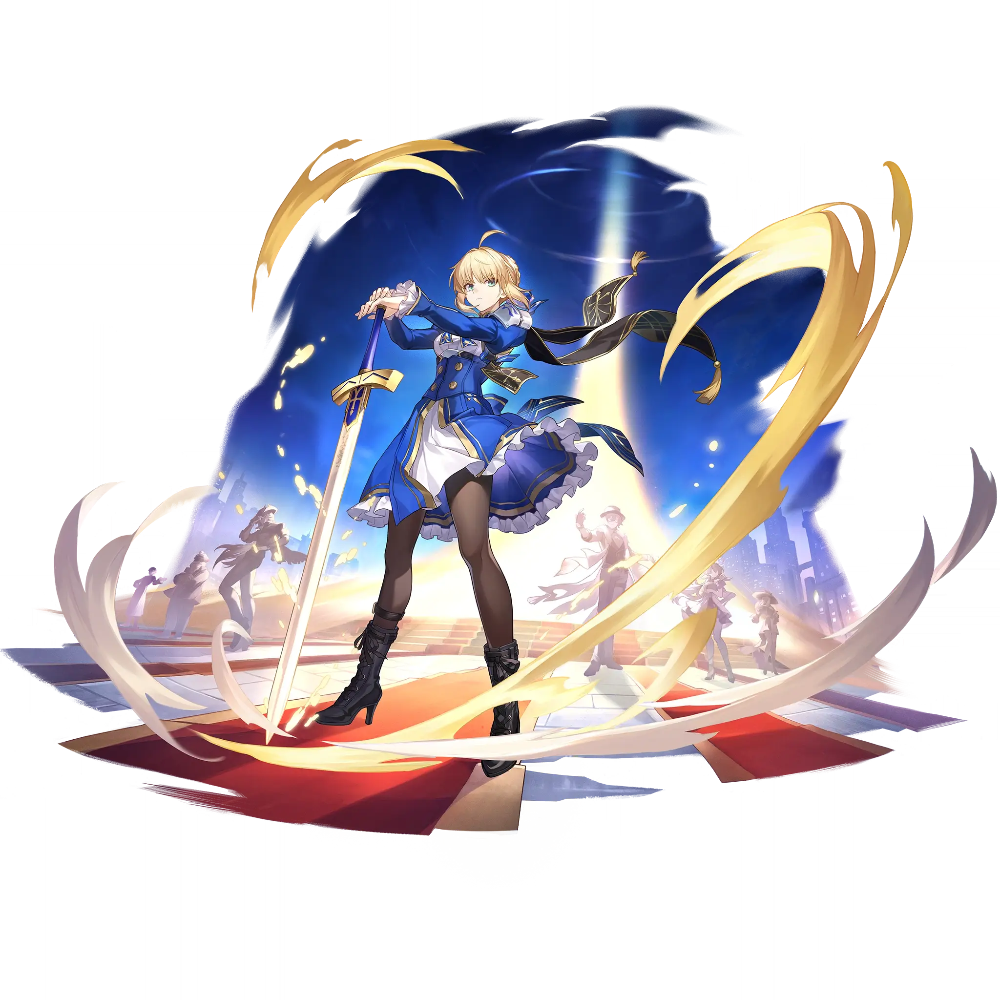

Saber
Best Saber build guide for Honkai Star Rail. See Saber's best Relics, Light Cones, teams, Eidolons, Trace priority, and how to play Saber.
🔍 Detail Skill
Semua skill aktif dan pasif beserta efeknya.
Deals Wind DMG equal to #1[i]% of Saber's ATK to one designated enemy.
Gains 2 "Core Resonance" and deals Wind DMG equal to #1[i]% of Saber's ATK to all enemies. If the number of enemies is 2/1 when this ability is used, additionally deals Wind DMG equal to #1[i]%/#2[i]% of Saber's ATK to all enemies.
Deals Wind DMG equal to #1[i]% of Saber's ATK to one designated enemy, and deals Wind DMG equal to #2[i]% of Saber's ATK to adjacent targets. If Saber currently possesses "Core Resonance" and her Energy can be regenerated to full by consuming "Core Resonance" after this instance of Skill attack, then increase the DMG multiplier for this instance of Skill use by #3[i]% for each stack of "Core Reson
Obtains 1 "Core Resonance" point(s) when entering battle. When any ally target uses an Ultimate, increases DMG dealt by Saber by #1[i]% for 2 turn(s) and obtains 3 "Core Resonance" point(s). Consuming 1 "Core Resonance" point will regenerate a fixed 8 Energy for Saber.
After using Technique, increases Saber's ATK by 35% for 2 turn(s) at the start of the next battle and gains 2 "Core Resonance".
⚔ Light Cone Terbaik
Diurutkan dari yang paling kuat. Persentase menunjukkan performa relatif terhadap pilihan terbaik.
💎 Relic Set Terbaik
Set terbaik untuk karakter ini, diurutkan berdasarkan prioritas.
📊 Stat Utama
Stat yang dicari pada tiap slot.
👥 Tim yang Direkomendasikan
Karakter yang sering dipasangkan bersama Saber.
 Gilgamesh
Gilgamesh
 Huohuo
Huohuo
 Tribbie
Tribbie
 Trailblazer • Remembrance
Trailblazer • Remembrance
 Saber
Saber
 Robin Summeretto
Robin Summeretto
🔗 Lanjutkan
Build ini dirangkum dari Prydwen Institute. Starwise tidak menghitung sendiri. Angka bisa berubah setelah patch atau karakter baru rilis.